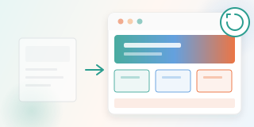
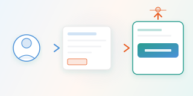

ツールだけ渡された
アカウントは配られたが、何に使えばいいかわからない。結局、いつものやり方に戻ってしまう。
アカウントは配られたが、何に使えばいいかわからない。結局、いつものやり方に戻ってしまう。
AI導入したい気持ちはある。でも、自社のどの業務に当てはめるべきか判断できない。
一時的に試したが、ルールがなく運用が続かない。導入して終わりになってしまった。
長い会議録を要点だけに整理。アクション項目も自動抽出。
顧客情報から提案メールのたたき台を生成。修正するだけで送れる。
マニュアルや過去資料をAIが理解。質問すればすぐ答えが返る。
箇条書きメモから整形された日報へ。毎日のルーティンを軽くする。

現場写真とメモから進捗報告の草案を作成。事務負担を大幅に削減。

よくある問い合わせへの返信テンプレをAIが提案。対応スピードが上がる。
BEYOND EXAMPLES
御社の業務・課題に合わせた AI エージェントを、ゼロから設計・構築します。
業種・規模を問わず、導入前のヒアリングから伴走します。
議事録・日報・報告書など、定型業務をAIで効率化。ルーティン作業を削減し、本当に大事な仕事に集中。
散らばったマニュアルや過去資料をAIが理解・活用。探す時間をなくし、社内の知見を資産として活かす。
顧客情報からメール・提案資料の草案を自動作成。営業スピードと提案の質を同時に向上。
散らばった社内情報を整理し、AIが検索・活用できる形に。
検索 即時化繰り返し作業をAIで自動化。議事録・日報・報告書から着手。
作業時間 -85%メール草案・提案資料のたたき台生成で、営業スピードを向上。
作成 -80%ルール策定から定着まで伴走。使われ続ける仕組みを設計します。
定着率 90%フォームまたはメールで、お気軽にご連絡ください。
→ まずは現状の課題を整理する第一歩現状の課題や活用イメージをお伺いします。
→ 優先すべき業務と期待効果が明確に小さく始めて、現場に合わせて設計します。
→ すぐ試せる小さな成功体験からスタート定着まで伴走し、成果を育てます。
→ 現場に根づく運用と継続的な効果改善AI SUPPORT
AI導入のご相談は、長崎での対面・オンラインどちらも対応。現状のヒアリングから丁寧にお受けします。
しつこい営業はしません。まずはお話を聞かせてください。